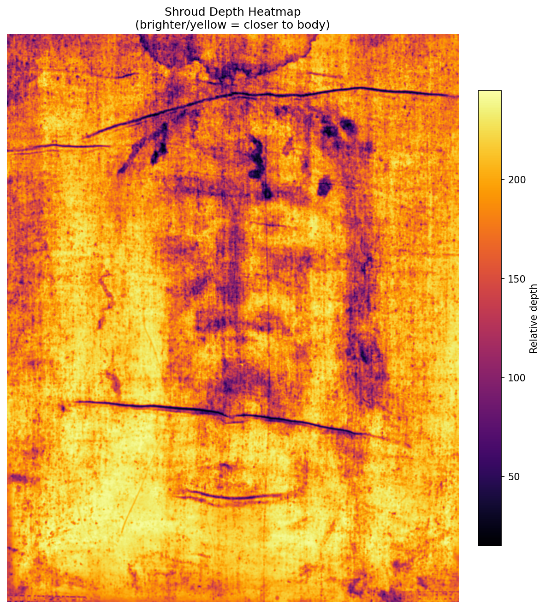
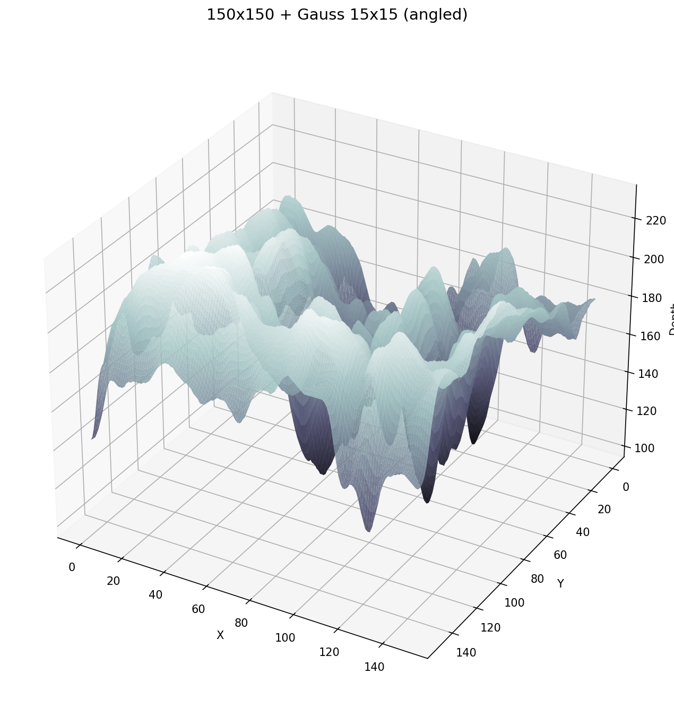
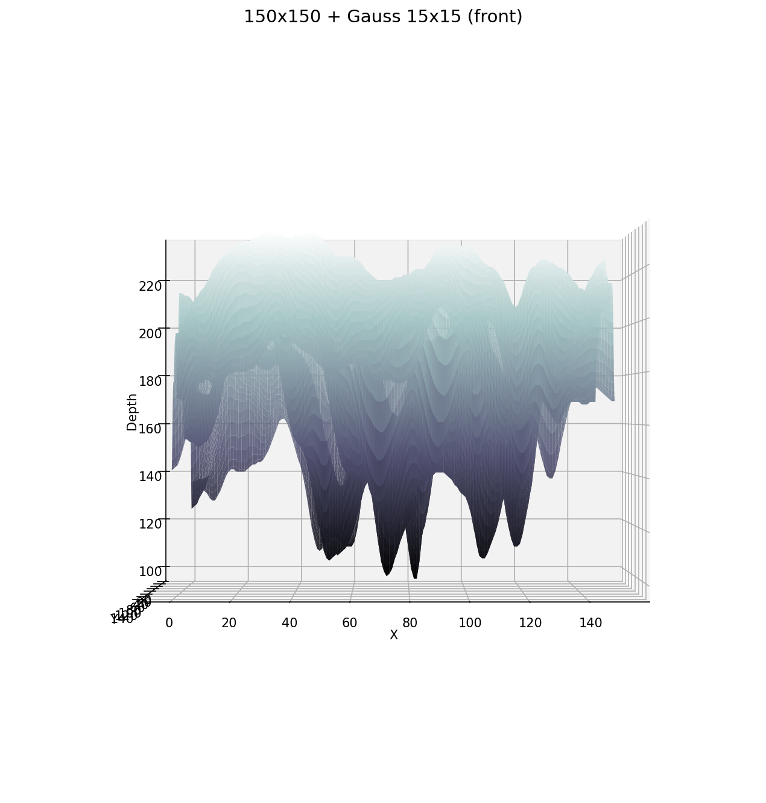
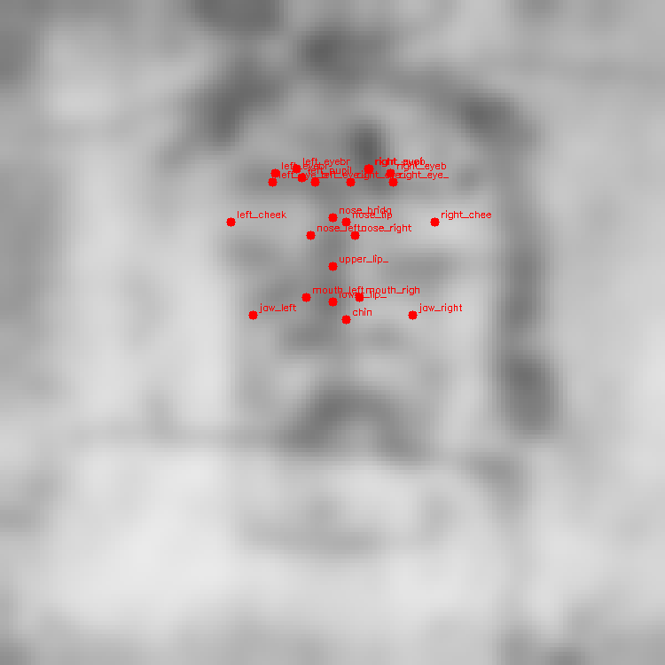

Measurements & Data
Findings
Anthropometric measurements extracted from the Shroud's depth-encoded image. Study 1 — Enrie 1931 source.
Depth Heatmap

VP-8 3D Surface


Facial Measurements
Scale calibration: 44.39 px/cm (combined face-height 40% + IPD 60% method). Source: Enrie 1931 photographic negative. Analysis on 150×150 + Gaussian 15 depth map.
| Measurement | Value (cm) | Expected Range | Status | Notes |
|---|---|---|---|---|
| Interpupillary distance | 5.45 cm | 5.5–7.5 cm | borderline | Just below range lower bound. Consistent with narrow-set eyes. |
| Inner eye distance | 2.87 cm | 2.8–3.5 cm | ✓ in range | |
| Nose width (alar) | 3.59 cm | 2.5–5.0 cm | ✓ in range | Prominent, broad nose — consistent with forensic literature. |
| Face width (cheekbones) | 16.50 cm | 12.0–17.0 cm | ✓ in range | Broad face — consistent with Neave/Taylor population data. |
| Jaw width | 12.91 cm | 10.0–15.0 cm | ✓ in range | |
| Mouth width | 4.30 cm | 4.0–6.5 cm | ✓ in range | |
| Facial symmetry ratio | 0.989 | >0.95 typical | ✓ excellent | 1.0 = perfect bilateral symmetry. |
| Nose to chin | 9.91 cm | 7.0–9.5 cm | outlier — explained | Cloth draping elongates vertical axis ~2 cm. Consistent with STURP findings. |
| Nose length (bridge to tip) | 1.17 cm | 2.5–5.5 cm | outlier — explained | Resolution limit: 4 px on 150×150 grid. Not a meaningful measurement at this scale. |
Summary
7 of 9 measurements fall within expected adult male ranges or are explained by documented physical factors (cloth draping, resolution limits). The two outliers are well-understood artifacts of the measurement methodology, not anomalies of the face itself.
Landmark Positions
All landmarks are detected from the depth map — no manual placement. The face midline was found by bilateral symmetry search at x=75 (50% of image width), with a symmetry correlation score of 0.989.


Depth Maps — Original and Healed
The healed depth map shows the result of bilateral symmetrization: trauma-related asymmetry algorithmically removed. This is an analytical step, not a claim about pre-Passion appearance. It shows what the depth data looks like when the asymmetry component is separated out.


Key Anatomical Observations
- Prominent nose: The nose bridge is the highest-elevation feature in the depth map, consistent across both VP-8 3D surface and heatmap visualization.
- Broad face: Bizygomatic width (16.50 cm) is near the upper end of the normal adult male range, consistent with the Neave forensic reconstruction literature describing first-century Levantine males as having wide faces.
- Deep-set eyes: Eye socket depressions are clearly resolved in the 150×150 depth map, appearing as the lowest-elevation facial features.
- Strong brow ridge: The brow region shows clear elevation above the eye sockets in the VP-8 3D surface.
- Excellent facial symmetry: 0.989 correlation between left and right halves — consistent with a real human face rather than an artistic rendering (which typically shows artist-introduced asymmetry).